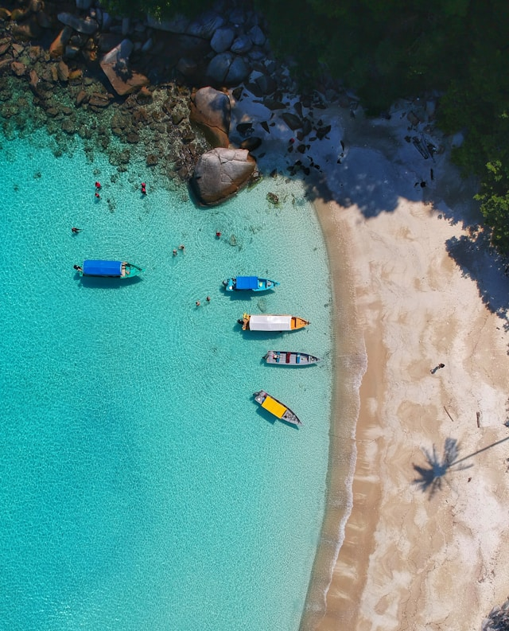

Find Paradise in Taniti
Taniti is a small, tropical island in the Pacific. While the island has an area of less than 500 square miles, the terrain is varied and includes both sandy and rocky beaches, a small but safe harbor, lush tropical rainforests, and a mountainous interior that includes a small, active volcano. Taniti has an indigenous population of about 20,000. Until a recent increase in tourism, most the Tanitian economy was dominated by fishing or agriculture.

Island Transportation
Almost all visitors arrive to Taniti by air, though some arrive on a small cruise ship that docks in Yellow Leaf Bay for one night per week. Taniti is served by a small airport that can accommodate small jets and propeller planes. Taniti is in the process of expanding the airport so larger jets will be able to land on the island within the next few years.
Ground Transportation
Public buses serve Taniti City and run from 5 a.m. to 11 p.m. every day. Private buses serve the rest of the island. Taxis are available in Taniti City, and rental cars can be rented from a local rental agency near the airport. Bikes and helmets are available to rent from several vendors (helmets are required by law). Taniti City is fairly flat and very walkable. Many tourists stay in the area surrounding Merriton Landing: this area is easy to explore on foot.
FAQs
- Q: What voltage are the power outlets on the island?
A: Power outlets are 120 volts (the same as in the United States). - Q: When can alcohol be purchased on the island?
A: Alcohol is not allowed to be served or sold between the hours of midnight and 9:00 a.m. - Q: What is the legal drinking age on Taniti?
A: The drinking age on Taniti is 18 and the drinking age is not strictly enforced. - Q: Do the people of Taniti speak English?
A: Many younger Tanitians speak fluent English. Very little English is spoken in rural areas, especially by the older residents. - Q: What kind of medical services does the island have?
A: There is one hospital and several clinics. The hospital has many multilingual employees. - Q: Is crime a problem on Taniti?
A: Violent crime is very rare on Taniti, but as tourism increases, there are more reports of pickpocketing and other petty crimes. - Q: Do businesses close for national holidays?
A: Taniti enjoys a large number of national holidays, and many tourist attractions and restaurants will be closed on holidays, so visitors should plan accordingly - Q: What currency should I bring?
A: Taniti uses the U.S. dollar as its currency, but many businesses will also accept euros and yen. Several banks facilitate currency exchange, and many businesses accept major credit cards.